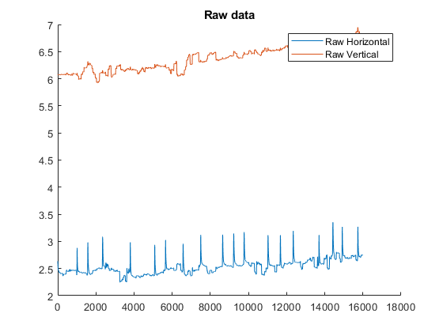

Contents
clc clear all close all
Load and display data
load('D:\University\Khaje\Semester 1\کنترل سیستم های عصبی عضلانی\Assignment 3\data.mat') Raw_Horizontal = data.B; Raw_Vertical = data.A; figure(1) hold on plot(1:length(Raw_Horizontal) , Raw_Horizontal); plot(1:length(Raw_Vertical) , Raw_Vertical); title('Raw data') legend('Raw Horizontal', 'Raw Vertical') figure(2) plot(Raw_Horizontal , Raw_Vertical) title('Vertical vs Horizontal')
Detrend data and plot Signals
Question 1
Detrended_Raw_Horizontal = detrend(Raw_Horizontal); Detrended_Raw_Vertical = detrend(Raw_Vertical); figure(3) title('Raw signals vs Detrended Signals') hold on plot(1:length(Raw_Horizontal) , Raw_Horizontal); plot(1:length(Raw_Vertical) , Raw_Vertical); plot(1:length(Detrended_Raw_Horizontal) , Detrended_Raw_Horizontal); plot(1:length(Detrended_Raw_Vertical), Detrended_Raw_Vertical); legend('Raw Horizontal', 'Raw Vertical' , 'Detrended Raw Horizontal' ,'Detrended Raw Vertical' , 'Location','best')
Finding Blink,Fixation and Saccade
Question 2
%assuming sample rate is 250 Hz time = (1:length(Raw_Horizontal))/250; velH = diff(Detrended_Raw_Horizontal)./diff(time); velV = diff(Detrended_Raw_Vertical)./diff(time); figure(4) subplot(2,1,1) plot(time , [velH , 0]) title('Horizontal Velocity') subplot(2,1,2) plot(time , [velV , 0]) title('Vertical Velocity') Velocity = sqrt(velH.^2 + velV.^2); figure(5) axe1 = subplot(3,1,1) plot(time , [Velocity , 0]) title('Total Velocity') axe2 = subplot(3,1,2) title('Velocities') hold on plot(time , [velH , 0]) plot(time , [velV , 0]) axe3 = subplot(3,1,3) title('Position') hold on plot(time , Detrended_Raw_Horizontal*20); plot(time, Detrended_Raw_Vertical*20); % plot(velV,velH) linkaxes([axe1 , axe2 , axe3])
axe1 =
Axes with properties:
XLim: [0 1]
YLim: [0 1]
XScale: 'linear'
YScale: 'linear'
GridLineStyle: '-'
Position: [0.1300 0.7093 0.7750 0.2157]
Units: 'normalized'
Use GET to show all properties
axe2 =
Axes with properties:
XLim: [0 1]
YLim: [0 1]
XScale: 'linear'
YScale: 'linear'
GridLineStyle: '-'
Position: [0.1300 0.4096 0.7750 0.2157]
Units: 'normalized'
Use GET to show all properties
axe3 =
Axes with properties:
XLim: [0 1]
YLim: [0 1]
XScale: 'linear'
YScale: 'linear'
GridLineStyle: '-'
Position: [0.1300 0.1100 0.7750 0.2157]
Units: 'normalized'
Use GET to show all properties
Calculating Blink,Fixation and Saccade frequency
Question 3 Frequency of Blinking
Blink_threshold = 0.2; Blinks = find_zc(time, Detrended_Raw_Horizontal, Blink_threshold); Blink_Frequency = numel(Blinks)/time(16001) figure(6) plot(time, Detrended_Raw_Horizontal, 'b.-', Blinks, Blink_threshold*ones(size(Blinks)), '*r', 'linewidth', 0.5, 'markersize', 5); grid on legend('signal', 'Blink Points');
Blink_Frequency =
0.2812

Frequency of Saccade
Saccade_threshold = 0.8; Saccades = find_zc(time, [Velocity,0], Saccade_threshold); Saccade_Frequency = (numel(Saccades)-(numel(Blinks) * 2))/time(16001) figure(7) plot(time, [Velocity,0], 'b.-', Saccades, Saccade_threshold*ones(size(Saccades)), '*r', 'linewidth', 0.5, 'markersize', 5); grid on legend('signal', 'Saccade Points');
Saccade_Frequency =
2.8436
%Frequency of Fixation Fixation_Frequency = (numel(Saccades)-numel(Blinks)+1)/time(16001) % function to find zero crossings function [Zx] = find_zc(x, y, threshold) y = y - threshold; zci = @(data) find(diff(sign(data)) > 0); % function: returns indices of +ZCs ix = zci(y); % find indices of + zero crossings of x ZeroX = @(x0, y0, x1, y1) x0 - (y0.*(x0 - x1))./(y0 - y1); % Interpolated x value for Zero-Crossing Zx = ZeroX(x(ix), y(ix), x(ix+1), y(ix+1)); end
Fixation_Frequency =
3.1404